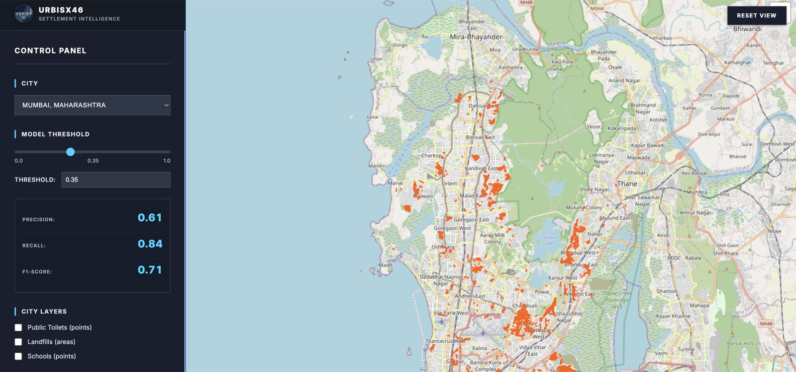

Explore settlement data with precision. Toggle layers, analyze patterns, export insights.

Visualize settlement boundaries with precision accuracy
Toggle between heatmaps, boundaries, and POI data
Download GIS-compatible data in multiple formats
Informal settlements are often missing from official data. Our technology brings them to light, enabling better decisions and more equitable outcomes.
Reveal settlements that traditional mapping misses, creating a more complete picture of urban landscapes and enabling data-driven decisions for inclusive urban planning.
Process vast urban areas in minutes, not months, with our efficient AI-powered analysis that enables quick identification and response to urban development needs.
Empower organizations to make data-informed decisions that transform communities and support evidence-based interventions worldwide.
A simple, powerful, three-step process from raw imagery to actionable insight.
We ingest and preprocess high-resolution imagery to ensure clarity and consistency across scenes.
Our deep learning models detect informal settlement patterns with high accuracy.
Results are visualized on an interactive map with detailed analytics and export options.
Access powerful tools for detecting and analyzing informal settlements with precision and ease.
Powerful tools designed for urban planning professionals
Adjust the sensitivity threshold to fine-tune detection results for your specific needs. Perfect for focusing on high-confidence areas or casting a wider net.
Highlight areas of interest while dimming less relevant regions. This helps you focus on what matters most in your analysis.
Seamlessly export your findings to standard GIS formats for further analysis in your preferred mapping software.
Answers to common questions about data, accuracy, exports, and privacy.
Performance varies by city and imagery. Typical precision near threshold 0.35 is around 0.85 with recall around 0.72. You can adjust the threshold in the app.
We use publicly available basemaps and preprocessed satellite predictions. The app overlays a stable white mask on top of OpenStreetMap tiles for clarity.
Yes. Use "Export to TIFF" to download the overlay for GIS or analysis workflows.
No. The app runs fully in your browser. Overlay rendering and exports happen locally.